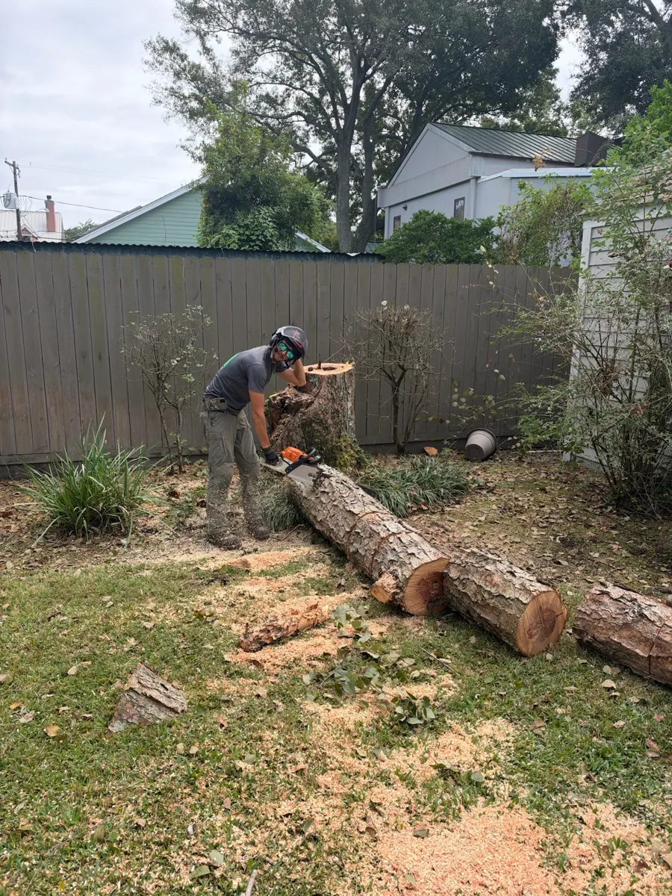

Methods Of Tree Removal: Understanding Your Options
Sometimes a tree has to come down for safety or appearance. Knowing the main methods of tree removal helps you understand what a job involves. Here, A Perfect Cut Tree walks through the options and the pros and cons of each.
Urgent or unsafe?Call an Arborist: (504) 732-0779


Traditional Tree Cutting
Traditional tree cutting is one of the most common methods, and it takes trained people with the right tools to do safely.
The trunk is cut with a chainsaw or other power saw, so protective gear is a must. Limbs usually come off before the trunk, and if the ground is going to be reused, the stump and roots are removed from the tree site once the tree is down. Large sections may need a crane or bucket truck to move them safely.
Before cutting, assess the tree’s size and condition, how close power lines are, whether the ground is level, and any obstacles that could cause danger. That assessment decides which techniques will remove the tree with the least damage to the property.

Tree Climbing And Removal
Climbing removal is another common method. A climber goes up the tree on ropes and safety gear, removes the limbs, and then cuts the trunk down in sections from the top.
It’s harder than cutting from the ground. The climber has to work around obstacles and stay secure before every cut, so it’s a job for trained professionals who know how to work safely at height.
The cut sections are lowered on ropes, or with a crane on bigger jobs, and then disposed of according to local rules or your wishes. Climbing removal is a good option when structures around the tree need protecting.
Stump Grinding And Removal
Once the tree is down, stump grinding takes care of what’s left. A grinder cuts away at the stump until it’s below ground level.
Grinding removes the tripping hazard and the obstacle for mowers and equipment, and it leaves a smooth surface where grass or other plants can grow.

Efficient and Safe Modern Tree Removal Techniques
Modern equipment has added options to climbing and hand cutting. A crane can lift large sections of a tree over a house or other obstacle, which cuts down the climbing and rigging the job needs. A chipper turns the branches into chips on site, which makes cleanup easier.
Whatever the method, modern equipment makes many removals safer and easier, especially for trees close to homes.
Contact Us Today!
A Perfect Cut Tree handles tree removal and stump grinding, using equipment such as cranes and chippers when the job calls for them.
Need a tree removed? Contact us today to get started or to learn more about our services.
What to Photograph From a Safe Distance
Photos and video show us the tree, the property around it, how we would reach it, and any visible hazards.


Tree down or a broken limb?
Skip the photos and call. Calls are answered 24/7.
(504) 732-0779Office hours: Monday to Friday 7 AM to 5 PM, Saturday 7 AM to 3 PM, closed Sunday.


Ready to Show Us Your Tree?
Show us the tree. An arborist reviews what you send. Photos give us a first look. Some trees need an in-person visit before we can make a final recommendation.